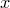
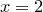

The following plot styles allow barcharts to be produced:
These styles differ in where the horizontal interfaces between the bars are placed along the abscissa axis and how wide the bars are. In the boxes plot style, the interfaces between the bars are at the midpoints between the specified datapoints by default (see, for example, Figure 1.1a). Alternatively, the widths of the bars may be set using the set boxwidth command. In this case, all of the bars will be centred upon their specified -coordinates, and have total widths equalling that specified in the set boxwidth command. Consequently, there may be gaps between them, or they may overlap, as seen in Figure 1.1(b).
Having set a fixed box width, the default behaviour of scaling box widths automatically may be restored either with the unset boxwidth command, or by setting the boxwidth to a negative width.
In the wboxes plot style, the width of each bar is specified manually as an additional column of the input datafile. This plot style expects three columns of data to be provided: the - and  -coordinates of each bar in the first two, and the width of the bars in the third. Figure 1.1(c) shows an example of this plot style in use.
-coordinates of each bar in the first two, and the width of the bars in the third. Figure 1.1(c) shows an example of this plot style in use.
Finally, in the impulses plot style, the bars all have zero width; see Figure 1.2(c) for an example.
In all of these plot styles, the bars originate from the line  by default, as is normal for a histogram. However, should it be desired for the bars to start from a different vertical line, this may be achieved by using the set boxfrom command, for example:
by default, as is normal for a histogram. However, should it be desired for the bars to start from a different vertical line, this may be achieved by using the set boxfrom command, for example:
set boxfrom 5
In this case, all of the bars would now originate from the line  . Figure 1.2(b) shows the kind of effect that is achieved; for comparison, Figure 1.2(a) shows the same bar chart with the boxes starting from their default position of .
. Figure 1.2(b) shows the kind of effect that is achieved; for comparison, Figure 1.2(a) shows the same bar chart with the boxes starting from their default position of .
![\includegraphics[width=\textwidth ]{examples/eps/ex_barchart1}](images/img-0394.png)
The bars may be filled using the with fillcolour modifier, followed by the name of a colour:
plot 'data.dat' with boxes fillcolour blue plot 'data.dat' with boxes fc 4
Figures 1.1(b) and (d) demonstrate the use of filled bars.
The boxes and wboxes plot styles expect identically-formatted data when used on two- and three-dimensional plots; in the latter case, all bars are drawn in the plane  . The impulses plot style takes an additional column of data on three-dimensional plots, specifying the
. The impulses plot style takes an additional column of data on three-dimensional plots, specifying the  -coordinate at which each impulse should be drawn.
-coordinate at which each impulse should be drawn.
If multiple datapoints are supplied to the boxes or wboxes plot styles at a common -coordinate, then the bars are stacked one above another into a stacked barchart. Consider the following datafile:
1 1 2 2 2 3 3 4
The second bar at  would be placed on top of the first, spanning the range  , and having the same width as the first. If plot colours are being automatically selected from the palette, then a different palette colour is used to plot the upper bar.
, and having the same width as the first. If plot colours are being automatically selected from the palette, then a different palette colour is used to plot the upper bar.